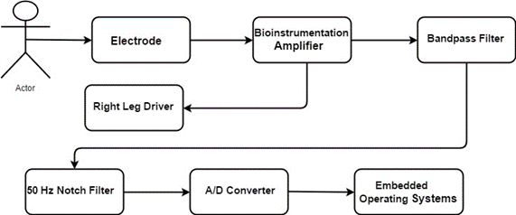

Anatomy

The components of an ECG include:
- Electrodes: These are small metal sensors that are attached to the skin of the chest, arms, and legs. They detect the electrical signals generated by the heart.
- ECG machine: This is a device that amplifies and records the electrical signals detected by the electrodes. The machine produces a graph or digital display of the heart's rhythm and electrical activity.
- Leads: This is the output produced by the ECG machine, which shows the heart's rhythm and electrical activity as a series of waves and intervals.
- ECG paper or digital display: These are wires that connect the electrodes to the ECG machine. The standard ECG recording includes 12 leads, or views, of the heart's electrical activity, which provide a comprehensive picture of the heart's rhythm and function.
- Interpretation: The ECG recording is interpreted by a healthcare provider, who analyzes the waves and intervals to diagnose heart conditions and assess the heart's function.
Working
An ECG works by detecting and recording the electrical activity generated by the heart as it beats. This activity is measured through electrodes that are placed on the skin of the chest, arms, and legs. These electrodes detect the electrical signals produced by the heart and send them to an ECG machine, which amplifies the signals and records them on paper or on a digital display.
The electrical activity of the heart is generated by specialized cells called pacemaker cells and conduction fibers that work together to create the heart's rhythm. As the electrical impulses move through the heart, they cause the heart muscles to contract and pump blood through the body. The ECG recording shows the heart's rhythm and electrical activity as a series of waves and intervals, which are interpreted by a healthcare provider to diagnose heart conditions.
The standard ECG recording includes 12 leads, or views, of the heart's electrical activity, which provide a comprehensive picture of the heart's rhythm and function. The ECG can also be used to monitor the effects of medications or medical procedures on the heart, as well as to track the progress of heart conditions over time.
Types
There are several types of ECG tests that can be performed to diagnose heart conditions, including:
- Resting ECG: This is the most common type of ECG test and is performed while the patient is lying down and at rest. It is used to diagnose a variety of heart conditions, including arrhythmias, heart attacks, and heart disease.
- Exercise stress test ECG: This type of ECG test is performed while the patient is exercising, typically on a treadmill or stationary bike. It is used to diagnose heart conditions that may only be present during physical activity.
- Holter monitor ECG: This is a type of ECG test that involves wearing a portable device that records the heart's electrical activity over a 24-hour period. It is used to diagnose arrhythmias that may not be detected during a resting ECG.
- Event monitor ECG: This type of ECG test involves wearing a portable device that records the heart's electrical activity only when the patient experiences symptoms, such as chest pain or palpitations. It is used to diagnose arrhythmias that may only occur intermittently.
- Ambulatory ECG: This type of ECG test involves wearing a portable device that continuously records the heart's electrical activity over a period of several days. It is used to diagnose heart conditions that may only be present during normal daily activities.
Block diagram of ECG
Applications
- Diagnosis of heart conditions.
- Monitoring heart health.
- Preoperative assessment.
- Heart risk assessment.
- Research.